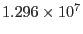

| Name | Value | Description | ||
| SqDegToSterad | DegToRad |
Square degrees to steradian | ||
| SqArcminToSterad | SqDegToSterad/3600.0 | Square arcminutes to steradians | ||
| SqArcsecToSterad | SqDegToSterad/  | Square arcseconds to steradian | ||
| SteradToSqDeg | RadToDeg |
Steradian to square degrees | ||
| SteradToSqArcmin | SteradToSqDeg*3600.0 | Steradian to square arcminutes | ||
| SteradToSqArcsec | SteradToSqDeg* | Steradian to square arcseconds |